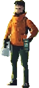
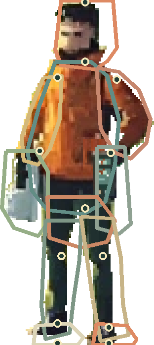

原画身份锁定
先保住这个人，再谈他怎么走。
这一轮回到已认可的像素原画。完整合成作为锁定底图，分层只建立工作边界，不虚构尚未画出的背面、关节或衣物内侧。
当前状态：身份与边界试验。 还不是可动角色。三维母版只保留作体积和装备关系参考；最终像素层必须在原生尺寸读成同一个人。
原生尺寸与边界图
左图是 78 × 174 原生像素；右图为 4 倍工作图，彩色轮廓是贴近原生像素的分层边界和锚点。


本轮建立的层与锚点
- 头发、脸与颈根
- 衣身与衣摆
- 携箱侧上臂、前臂与手
- 记录器侧上臂、前臂与手
- 工具箱与记录器
- 骨盆
- 左右大腿、小腿与鞋
- 左右脚底接触点
锚点记录在 manifest.json；可编辑源在 OpenRaster 文件。底图仍保留在最下层，便于逐层清理后逐步关闭；当前合成图已与原画逐像素一致。
下一道门槛
先把矩形工作边界清成贴合轮廓的像素层，并补足被遮挡的关节区域；通过朝左和偏正面两张站姿后，才制作四个负重关键姿态。任何层清理都以原生尺寸的身份、接触和色块为准。